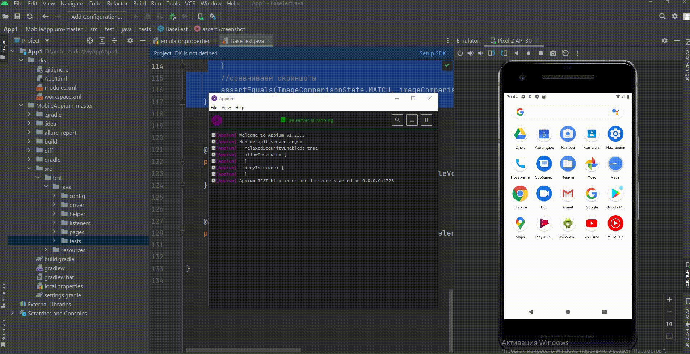
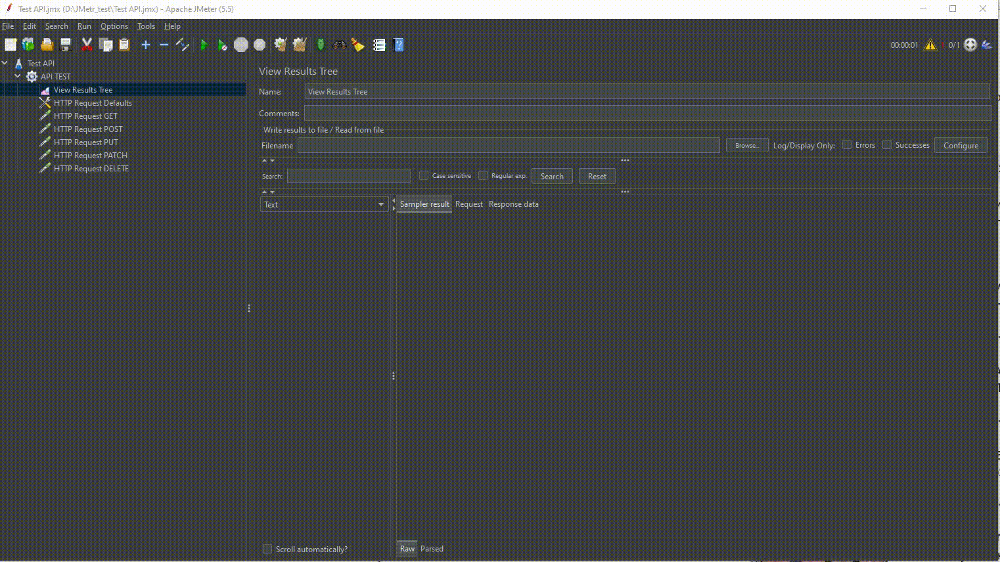

1.ПОРТФОЛИО
Опыт составления профиля нагрузочного тестирования, проведение тестирования. Сбор и анализ результатов тестирования, формирование отчетов.
2.Android Studio
Тестирование приложений на мобильных платформах iOS и Android; Тестирование веб-сервисов, API, frontend, интеграции со сторонними сервисами, в том числе платежными;


Сypress
Регулярный запуск авто-тестов, поддержка работоспособности авто-тестов, ручная проверка упавших автотестов
4.Selenium
Расширение набора авто-тестов, возможностей авто-тестов и фреймворка для запуска авто-тестов
5.Pytest
Знание и практический опыт использования фреймворка PyTest
6.Java
g
7.Linux
Хорошее знание Unix/Linuxоперационных систем и команд пользователя
8.Python
Знание и практический опыт написания авто-тестов на языке Python(для тестирования бэкэнда)
9.Jira
опыт работы с системами Jira / Confluence / TestRail / CI-CD Jenkins / Bitbucket / Git
10.Ansible
Oпыт использования Ansible, Terraform, Rally
11.Zvirt
Хорошие знания и опыт работы с платформами виртуализации - Zvirt, Veil ECP, Горизонт ВС, SharxDC
12.Bash
Опыт практического использования языка bash
13.CI/СD
Понимание процесса CI/СD
14.Docker
Хорошие знания и опыт работы с платформами виртуализации - Zvirt, Veil ECP, Горизонт ВС, SharxDC
15.Jenkins
- Тестирование API: Postman – создание коллекций, отправка и редактирование запросов, параметров; понимание REST и SOAP, работа с XML, JSON, WSDL; знание статус-кодов,
16.Мануальное тестирование
f
18.Postman
f
19.SQL
Тестирование базы данных. SQL (SELECT, JOIN, DELETE, GROUP BY, ORDER BY, WHERE, DIST);
20.JMetr
Опыт составления профиля нагрузочного тестирования, проведение тестирования. Сбор и анализ результатов тестирования, формирование отчетов.
